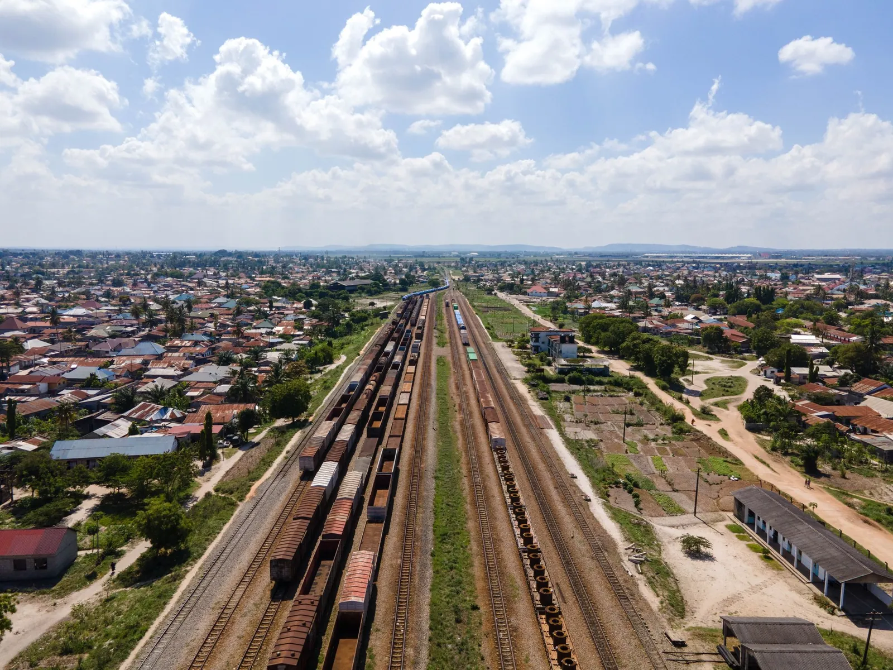
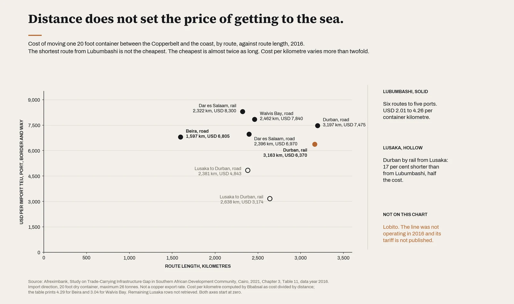
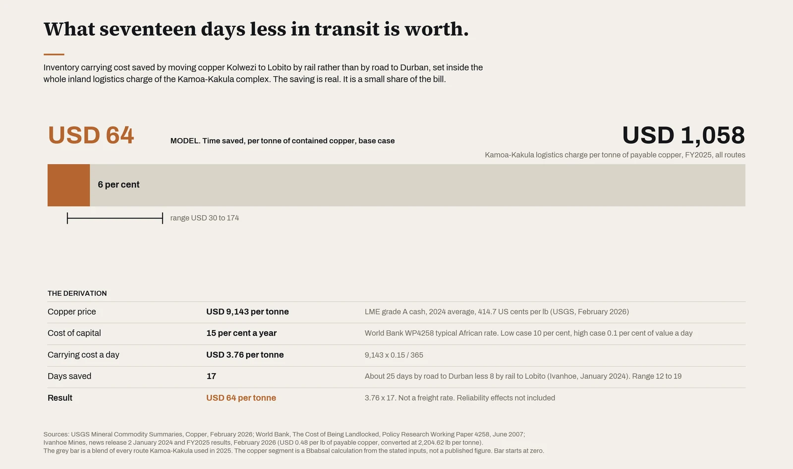
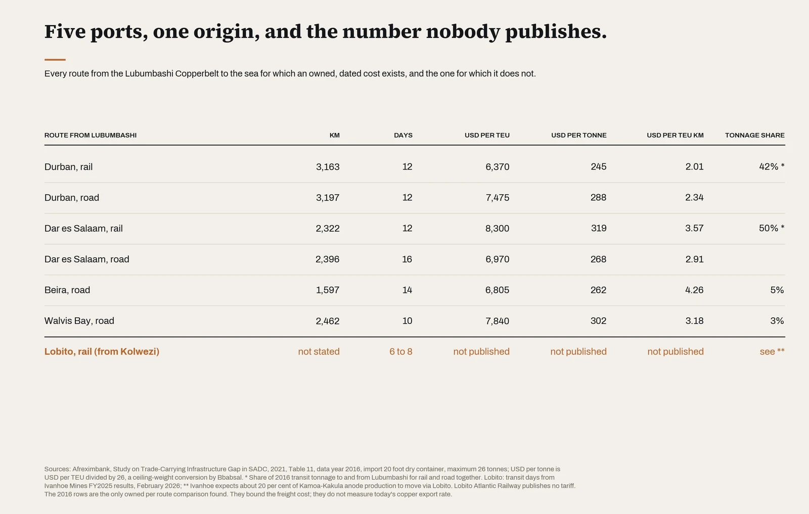
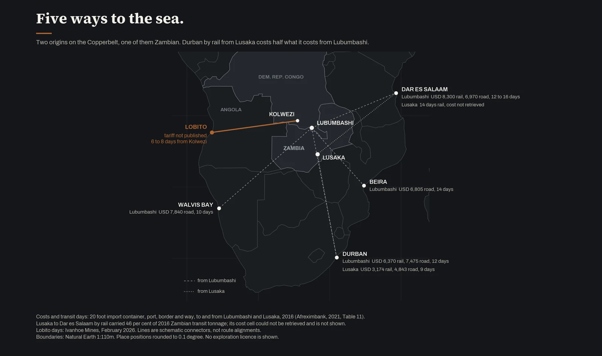

Research
The landlocked discount: what the Lobito Corridor saves, and the number nobody publishes
Distance does not set the price of getting Copperbelt copper to the sea. The time saving the Lobito Corridor offers can be costed, and it is a small share of the one logistics charge a producer discloses. The freight rate that would explain the rest is not published by anyone.
Key findings
0101
Distance does not set the price of getting Copperbelt copper to the sea. In the only owned, dated, per route cost comparison for the region, the shortest route to a port is not the cheapest, and the cheapest is almost twice as long as the shortest.
02
The Lobito Corridor’s time saving is real and evidenced. On a stated derivation, seventeen fewer days in transit are worth about USD 64 per tonne of contained copper, roughly 6 per cent of the one logistics charge a Copperbelt producer discloses per tonne. This is a model, not a measurement.
03
So if the corridor materially lowers the landed cost of copper, it must do so through its freight rate. No producer, concessionaire or institution we could find publishes that rate.
04
For Zambian copper today the corridor is a prospect rather than a route: the branch that would carry Zambian tonnage onto the line is not built.
The claim everyone repeats
02The Lobito Corridor is widely described as the railway that cuts the cost of getting Central African copper to market. The physical facts behind that description are not in dispute. Ivanhoe Mines states that the rail route from Kolwezi to the Angolan port of Lobito is roughly half the distance of the route to Durban, and reports a transit time of 6 to 8 days against 20 to 25 days by road to Durban.
Half the distance. A third of the time. It is natural to assume half the cost.
The assumption deserves testing, because a great deal now rests on it. Every copper asset in Zambia and the southern Democratic Republic of Congo is valued net of the bill for reaching the sea, and that bill is one of the five places where copper’s real constraints sit. Development finance institutions, United States agencies and private investors are being asked to price what the corridor changes. A Zambian official weighing the branch line is being asked the same question from the other side.
The short answer from the published evidence: distance explains little, time explains a small part, and the part that would explain the rest is not public.
What being landlocked costs
03The World Bank’s working paper on the cost of being landlocked, by Arvis, Raballand and Marteau, splits the penalty into three parts: the freight rate, the cost of time, and the cost of unreliability. It is the right frame here, and it is theirs, not ours. Its value is that it forces the question of which part a new corridor actually moves.
Evidence one: distance does not predict cost
04The only owned, dated, per route comparison we found for the Copperbelt is in an Afreximbank study of the infrastructure gap in the Southern African Development Community, published in 2021 with a data year of 2016. It prices a 20 foot import container to and from Lubumbashi by six routes.
The range is USD 6,370 to 8,300 per container. Per container kilometre, it runs from USD 2.01 to 4.26, a spread of more than two to one (Bbabsal’s computation, cost divided by distance).
The ordering is the finding. Beira by road is the shortest route at 1,597 km and costs USD 6,805 per container. Durban by rail is 3,163 km, almost twice as far, and is the cheapest of the six at USD 6,370. Dar es Salaam by rail, at 2,322 km, is the most expensive at USD 8,300.
Figure 1 plots distance against cost for every route in the table. If distance set the price, the points would climb from left to right. They do not.
The same table raises a second question, which it does not answer. From Lusaka, Durban by rail cost USD 3,174 per container for 2,638 km. From Lubumbashi, the same port by the same mode cost USD 6,370 for 3,163 km. A fifth more distance, twice the cost. The table does not say why. An additional border and a different rail operator on the Congolese section are obvious candidates, but they are inference, and we offer them as the question the data raises rather than as its answer.

Evidence two: what seventeen days are worth
05The time saving can be costed. The World Bank method values time in transit as the value of the cargo, multiplied by the daily cost of capital, multiplied by the days saved.
The inputs, each owned. Value: USD 9,143 per tonne, the 2024 average London Metal Exchange cash price reported by the US Geological Survey (414.7 cents per pound). This is a reported average used as an input. It is not a price view. Cost of capital: 15 per cent a year, the rate the World Bank paper applies to African shipments. Days saved: 17, the gap between about 25 days by road to Durban and 8 days to Lobito, as reported by Ivanhoe.
USD 9,143 multiplied by 15 per cent, divided by 365, gives about USD 3.76 per tonne per day. Over 17 days that is about USD 64 per tonne of contained copper. Across a reasonable spread of inputs, from 10 per cent a year over 12 days to 0.1 per cent a day over 19 days, the range is USD 30 to 174.
Set that against something real. Ivanhoe reports a logistics charge at Kamoa-Kakula of USD 0.48 per pound of payable copper for FY2025. Converted at 2,204.62 pounds per tonne, that is about USD 1,058 per tonne, roughly a ninth of the 2024 average copper price (conversion by Bbabsal). The time saving on the central case is about 6 per cent of that charge, with a range of 3 to 16 per cent. Figure 2 shows the derivation on its face.
Two qualifications matter. The USD 1,058 is a blend of every route the operation used in FY2025, not a Durban rate. And the World Bank argues that unreliability can cost roughly twice as much again as time in transit. Apply that multiplier in full and the time component rises to about USD 192 per tonne. Material. Still a minority of the bill.

What follows: the freight rate is doing the work, and it is not published
06If time accounts for a small share of the logistics charge, then any large saving from the corridor has to come through the price of carrying the copper. That is the number that would settle the question.
We could not find it. Lobito Atlantic Railway publishes no tariff. Ivanhoe discloses transit times and a blended logistics charge, not a per route rate. First Quantum discloses freight only as a per pound deduction from sales, with no split by route. The OECD background note on the corridor, dated April 2025 and marked as a draft, offers no freight figure with a method. The concession, the financing and the operating arrangements are all documented. The price of using the line is not.
Figure 3 sets out the five ways to the sea from one origin. Four rows carry a cost. One carries transit days and the words “not published”.
A corridor can be faster and cheaper. It can also be faster and priced to capture the saving.

Who receives the saving
07The World Bank paper describes the mechanism plainly: where a corridor operator or regulator recovers fixed cost through price, the gains from faster and more reliable transit need not reach the shipper. The corridor was built and financed to carry traffic profitably, which is a reasonable objective and also the reason the question cannot be assumed away. For copper on the Lobito line, whether the saving is passed through, shared or retained is untested in any published source. It is an open question, and stating it as one is the honest position.
The Zambian anchor
08The corridor’s anchor tonnage is Congolese. The link that would carry Zambian copper onto the line, beginning with a section of about 259 km from Luacano in Angola to Jimbe on the Zambian border, is not built.
In the meantime Zambian freight moves by other routes. In 2016, of about 2.5 million tonnes a year of transit freight to and from Lusaka, 46 per cent moved through Dar es Salaam, 21 per cent through Durban, 19 per cent through Beira and 13 per cent through Walvis Bay. For a Zambian producer the relevant comparison today is among those four. Lobito is a prospect whose value depends on a rate that has not been stated.
This is a statement about infrastructure and disclosure. It is not a judgement on any government, operator or financier.

What would change this view
09Two pieces of evidence would overturn or weaken the argument, and we would publish either.
A published Lobito Atlantic Railway tariff, or a producer’s per route cost disclosure, showing a freight saving of USD 100 or more per tonne of contained copper against Durban. That would make the corridor a freight story, and the finding that the saving is unevidenced would fall.
Measured transit time variance on the southern routes showing unreliability costs close to the World Bank multiplier. That would raise the time component to about USD 192 per tonne and make time a material, though still minority, share.
The weakest assumption, conceded
10The only per route cost comparison is from 2016. It prices imported containers, not exported copper cathode or concentrate, and converting it to tonnes uses the table’s maximum load of 26 tonnes per container, which gives a floor on cost per tonne rather than a measurement. It does not tell anyone what it costs to move copper from Kolwezi or Chingola in 2025.
The conclusion survives this, because it rests on the shape of the evidence rather than on a current number: across every route in the table, distance does not predict cost, and the rate for the newest route is absent. Both statements would remain true if every figure in the table were doubled.
Where Bbabsal sits
11Bbabsal holds exploration licences in Zambia. A narrower landlocked discount would raise the value of any future Zambian production, so we have an interest in the corridor saving being large.
The evidence here says the saving that can be demonstrated is smaller than the one in circulation. We publish it for that reason. Bbabsal has no declared mineral resource or reserve and no production to move, and nothing in this Study bears on its own ground.
The landlocked discount is set by how a corridor performs and what it charges, not by how far it runs. The most important new corridor on the Copperbelt has told the market how fast it is. It has not yet said what it costs.
Method and sources
12Cost of time: World Bank WP4258 method, value multiplied by daily cost of capital multiplied by days saved. Central inputs USD 9,143 per tonne, 15 per cent a year, 17 days. Range: 10 per cent a year to 0.1 per cent a day, 12 to 19 days. Using an estimated 2025 average price of 440 cents per pound would raise every time result by about 6 per cent. Status: MODEL.
USD per tonne from container cost: divided by 26 tonnes, the maximum load stated in the source table. A ceiling weight conversion, so a floor on cost per tonne.
Cost per kilometre: Bbabsal’s computation, cost divided by distance. Two printed values in the source differ from this calculation: Beira, printed 4.29 against computed 4.26; Walvis Bay, printed 3.04 against computed 3.18. We use the computed values. The finding is unaffected either way.
Logistics charge: Ivanhoe’s USD 0.48 per pound of payable copper multiplied by 2,204.62. A blend of all routes used in FY2025.
All figures in United States dollars.
Limitations. No 2025 per route freight rate from any owner. No Lobito tariff. No measurement of reliability on any route. Cost data are from 2016, import direction, containerised. Several Lusaka rows of the Afreximbank table could not be retrieved and are not used. The tariff capture mechanism is documented by the World Bank; copper specific evidence for it is absent. Source 6 is marked by its authors as a draft.
01
World Bank, The Cost of Being Landlocked: Logistics Costs and Supply Chain Reliability, Policy Research Working Paper 4258, Arvis, Raballand and Marteau, June 2007.
02
World Bank, The Cost of Being Landlocked, Directions in Development, 2010.
03
Afreximbank, Study on Trade-Carrying Infrastructure Gap in the Southern African Development Community, Cairo, 2021, Chapter 3, Tables 10 and 11, data year 2016.
04
US Geological Survey, Mineral Commodity Summaries, Copper, February 2026.
05
Ivanhoe Mines, news releases of 2 January 2024 and 7 February 2024; Q4 and FY2025 results, February 2026.
06
OECD Emerging Markets Forum, Background Note: The Lobito Corridor, April 2025, marked DRAFT.
07
MIGA, Lobito-Luau Railway Corridor Project, Project ID 15099, 18 November 2024.
08
US International Development Finance Corporation, Lobito Atlantic Railway S.A. project description, 2024.
09
Trafigura, press release, 4 July 2023.
10
First Quantum Minerals, Third Quarter 2025 results, 29 October 2025.
11
Natural Earth, 1:110m admin 0 country boundaries (Figure 4).
Corrections to this study will be published here with the date attached. Bbabsal has no declared mineral resource or reserve, and nothing in this study relates to ground the company holds. Nothing here is an offer of securities or investment advice.